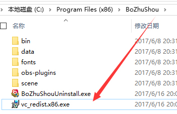
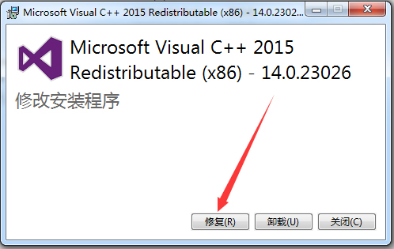
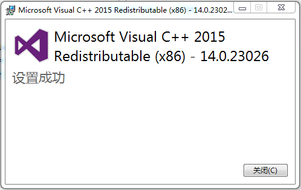
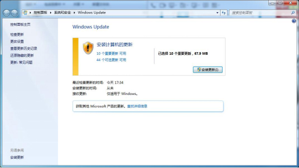
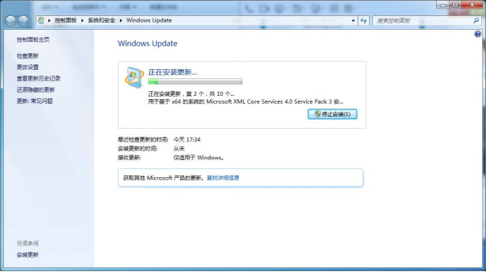

一、错误：Could not find any D3DCompiler libraries
解决方案：下载安装DirectX
下载地址： https://www.microsoft.com/zh-cn/download/details.aspx?id=35
二、错误：无法启动此程序，因为计算机中丢失api-ms-win-crt-runtime-|1-1-0.dll。尝试重新安装该程序以解决此问题。
解决方案：重新安装Microsoft Visual C++ 2015 RC Redistributable (x86) – 14.0.22816
打开播助手安装路径（如：C:\Program Files (x86)\BoZhuShou）下的 vc_redist.x86.exe



打如修复安装失败，请升级系统，或使用“驱动精灵”进行系统必备组件修复

